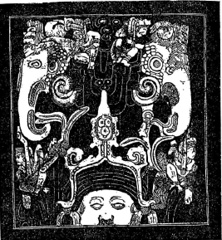
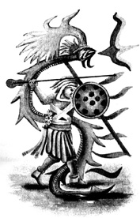

XII. BÖLÜM
ANTİK UYGARLIKLAR ARASINDA YUCATAN’IN YERİ
Niven’in hazinelerinden ayrıldıktan sonra Meksika’nın Yucatan olarak adlandırılan bölgesine geçeceğim. Yucatan, Meksika’nın güneydoğu kısmında yer alıyor ve kıtadan doğu yönünde uzanan bir yarımada oluşturuyor. Kuzeyden Meksika Körfezi’yle, doğu ve güneydoğudan ise Karayip Denizi’yle çevrelenmiş durumda.
Yucatan, antik uygarlıkların kalıntılarıyla kelimenin tam anlamıyla dolmuş durumda olmakla birlikte, bu kalıntıların hiçbiri Niven’in gömülü şehirleri kadar yaşlı değil. Orta Amerika ve Yucatan anayurdun ilk kolonilerinden birini oluşturuyordu. Zamanla bu koloni bir imparatorluğa dönüştü ve Mayax adını aldı.
Öncelikle bu harabeler arasında en antik olduğu düşünülenlerle başlayacağım. Bunlar tapınaklar, mezarlar ve idari binalardan oluşuyor. Tümü taştan ve hepsi kısmen ya da tamamen toprakla örtülmüş durumda. Daha sonra tamamen toprağın üzerindeki, çeşitli kaynaklar tarafından yaşlarının 2 bin ile 15 bin yıl arasında olduğu tahmin edilen binaları ele alacağım. Antik metinlerden alıntılar bu binaların en yenisinin 15 bin yaşında olduğunu gösteriyor ve çoğunun bundan daha yaşlı olduğuna inanmak için her sebep mevcut, ben bazılarının böyle olduğundan eminim.
Sanırım okuyucularım bu devasa yapıların duvarlarının çatlayıp açılmasının ve taşlarının düşmesinin insan elinin eseri olamayacağı konusunda benimle hemfikir olacaklar. Bunlar büyük merkezi gaz kuşağının Yucatan altından kendisine yol açarak ilerlerken neden olduğu yanardağ faaliyetlerinin sonuçları. Binalar o zamana dek sağlam durmuştu.
Bir işaret olarak, üzerinde tüylü yılan (Kukul Khan) sembolü olan tüm binalar 15 bin yıl veya daha öncesine ait. Bu binalar Can (yılan) Hanedanı zamanında dikilmişti. Can Hanedanı Kraliçe Moo ile sonlandı. Kraliçe Moo, Mısır tarihinin ilk yüzyılı içerisinde yaşamıştı.
Yazarın yakın dostları olan Dr. Le Plongeon ve eşi Alice D. Le Plongeon, Yucatan harabelerinin gömülü kısımlarının altını üstüne getiren ilk arkeoloji kâşifleriydi. Yayımladıkları eserleri, keşifleri hakkında birçok ilginç ayrıntıyı gözler önüne seriyor. Öte yandan keşiflerinin yarısı bile yayımlanmış değil. Dr. Le Plongeon ölümünden önce yayımlanmamış notlarını ve tercümelerini yazarla paylaştı, dolayısıyla Yucatan hakkında söylediklerim esasen Dr. Le Plongeon’un harabeler arasında geçirdiği yirmi yılın ürünü ve çoğu kendi kişisel incelemelerimle de desteklenmiş durumda. Yucatan harabeleri üzerine ilk notlarım Le Plongeon tarafından gün ışığına çıkarılan bazı arkeolojik kayıtlar hakkında:
Kutsal Gizemler Tapınağı: Uxmal’da Le Plongeon’un araştırmalarında “Kutsal Gizemler Tapınağı” adını verdiği antik bir Maya tapınağı bulunuyor. Duvarlardaki yazıtlar, üzerlerine kazınmış çok sayıda sembolle bir araya gelince, tarih öncesinin tarihinde bir sayfa hâline geliyor. Antik insanı, Babil ve Mısır’ın erken dönemleriyle buluşturuyorlar. Batı Toprakları’nın simgesi olan bu bina, üç bölmeden oluşmuş. Merkez odanın, yani Kutsallar Kutsalı’nın kapısı bir zamanlar anayurdun bulunduğu yön olan batıya bakıyor ve bu özelliğiyle Angkor ve Kamboçya’daki, tümü doğuya, kaybolan ülkeye doğru bakan tapınak ve heykellerle benzeşiyor.
Tavanlar üçgen bir kemer oluşturuyor. Üçgenin içinde, doğuya bakan iki odanın kemerle birleşen uçlarında yarım küreler var. Kuzey odasındaki üçü, bir üçgen oluşturuyor. Güney odasındaysa bunlardan beş adet bulunuyor. Mabedin girişinin üst pervazının birkaç santimetre yukarısında tüm yapıyı saran bir saçak mevcut. Bunun üzerine oyulmuş ve birçok kez yinelenmiş çapraz kemikler ve kurukafa figürü görülebilir.
Kutsal Gizemler Tapınağı’nda bulunan semboller arasında en kayda değer olanı, Mu’nun kozmogonik diyagramı. Bu, daha önce de gösterdiğim gibi insanın ilk dinine ait. Kutsal Gizemler Tapınağı 11.500 yıldan daha eski ve bu yaş şunlarla kanıtlanıyor:
Plutarkhos’un aktardığına göre, Mısır rahipleri Solon’a, 9 bin yıl önce Atlantis’in batarak Atlantik’i çamur ve yosunla geçilmez kılıp, ötedeki ülkenin korkunç tufanlarla yıkıma uğratması sonucu Batı Toprakları ile iletişimin koptuğunu söyledi.
Solon, Mısır’ı M.Ö. 600 yılında ziyaret etmişti. Atlantis bundan 9 bin yıl önce batmıştı. Dolayısıyla, M.Ö. 2000 yılına 600 ve 9000’i ekleyerek, 11.600 yıl önceki bir tarihe ulaşıyoruz.
Bu yıkıcı tufana dair başka bir kanıt İspanyol tarihçi Dr. Aguilar’ın yazılarında şu şekilde anlatılıyor: “Putperestlerden aldığım kitapta Ununyit (sel) adını verdikleri bir tufan hakkında bilgi vardı.” Bu eski yapıların zeminleri etrafındaki birikme tabakası da jeolojik olarak bunu destekliyor.
Kutsal Gizemler Tapınağı’nın belirlediğim tarihten ne kadar önceden beri ayakta durduğunu kimse söyleyemez, fakat çok önce olmadığı da kesin, zira bu tapınak Batı Toprakları’nın kaybının anısına dikilmiş bir anıttı ve bu ülke de Atlantis’in batışından kısa bir süre önce yok olmuştu. Le Plongeon tapınak duvarlarında bir yazıt buldu. Şöyle yazıyordu: “Bu mabet kutsal gizemlerimizin doğum yeri olan Batı Toprakları’nın, Mu’nun hatırasına adanmış bir anıttır.”
Bu yazıtı Maya metinlerinden iyi anlayan yerli bir beyefendi yardımıyla doğrulamayı başardım. Batı Toprakları anısına yapılmış bir anıt veya bir sembol olduğu için, tapınağın Batı Toprakları yok olduktan sonra dikilmiş olması da doğal.
Le Plongeon ayrıca binalardan birinde “Uxmal üç kez depremlerle yıkıldı ve üç kez yeniden inşa edildi.” diyen bir yazıt buldu. Şehir bugün eğitimli yerlileri tarafından “Üç Kez Kurulan Şehir” olarak biliniyor.
Niven’in gömülü Meksika şehirleri, Uxmal’dan kıyasla yalnızca birkaç mil uzakta, dolayısıyla Niven’in en üstteki şehirlerinin yıkılmasına neden olan afetlerin Uxmal’ı da etkilemiş olması gayet mümkün.
Chichen Itza’ya piknik yapmaya gitmiş bazı bilim insanlarımız, geriye bu eski binaların yalnızca 1.500 yıl önce yapıldığını anlatan bir hikâyeyle dönüyorlar. Aslında bu binaların çoğu 11.500 yıl önce ayakta duruyordu, bazıları kesinlikle daha da eski kökenli. Burada bahsettiklerim, Can Hanedanı’nı takip eden PPeu Hanedanı zamanında inşa edilmiş olanlar.
Yucatan-Maya yıkıntılarının antik tarihi konusundaki büyük otoritelerden biri, 16. yüzyılda Cortez liderliğindeki İspanyollar eşlik etmiş olan Piskopos Landa 400 yıl önce yazdığı “Relacion de las Cosas”ın 328. sayfasında şöyle diyor:
“İspanyolların vardığı tarihte antik Maya yapıları çoktan yıkıntılara dönmüş, yanı başında yaşayan Aborjinlerin huşu ve saygıyla baktığı nesneler hâline gelmişti. Onları kimin ne amaçla inşa ettiğini çoktan unutmuşlardı. Maya rahipleri ilimleri üzerine kitaplar yazıp, bilgilerini aydınlatılmaya değer gördüklerine öğrettiler. Kendi uluslarının erken dönem tarihi, ayrıca dostça ilişkiler içinde oldukları veya savaştıkları diğer insanlar hakkında kitapları vardı. Bu ciltlerde farklı çağlarda gerçekleşen olayların tam bir tarihçesi; çeşitli savaşlar, seller, salgınlar, vebalar, kıtlıklar ve tüm önemli olaylar yer alıyordu.”
Landa bu kitaplardan binlercesiyle birlikte, parşömen üzerine yazılmış yirmi yedi büyük elyazması yaktı, 5.000 heykel ve 197 vazoyu yok etti.
Cogolludo, “Historia de Yucathan” cilt IV, bölüm 3, sayfa 177’de şöyle diyor:
“Yucathan Krallığı’na ilk yerleşen insanlar ve onların antik tarihleri hakkında, şunlar dışında hiçbir bilgiye ulaşamadım: İspanyol tarihçeleri, günümüz yolcularını hayran bıraktığı kadar zamanında İspanyolları da etkilemiş antik, görkemli yapıları inşa edenlerin adet ve gelenekleri hakkında güvenilir tek bir söz bile söylemiyor. İspanyolların bunları inşa edenlerin kim olduğu sorusuna yerlilerin verdiği tek cevap, kaçınılmaz biçimde ‘Bilmiyoruz’ idi. Bunların kim olduğu bilinmiyor ve yerlilerin bile bu konuda bir gelenekleri yok.”
Lizana, “Historia de Nuestra Senora de Ytzamal”, bölüm II:
“İspanyollar bu ülkeye geldiklerinde, bazı anıtlar yirmi yıl önce yapılmış kadar yeni görünüyor olsa da yerliler bu yapıların içinde yaşamıyor, onları tapınak ve mabet olarak kullanıp içlerinde kurbanlar -bazen erkek, kadın ve çocuklar- veriyorlardı. Bu yapıların inşası çok eskiye dayanıyordu.”
Le Plongeon şöyle diyor: “Bu binalar ne şimdiki ırk ne de onların ataları tarafından inşa edilmemişti.”
Pedro Beltram, “Arte del Idioma Maya”: “Maya heykellerinde, özellikle de en antik binaları süsleyen mastodon başlarında ‘gerekli olan’ adı yazıyor.”
Le Plongeon: “Maya tarihinin çok uzak bir zamanında, Mastodon hortumlarına oyulmuş, kutsal veya halka açık tüm binaların cephesini süsleyen semboller arasında şu işaret zaman zaman göze çarpıyor: Ortak olarak ele alındığında bunların okunuşu Chaad (Gök Gürültüsü).”
Büyük Maya yapıları zamanla çürüyerek sendeleyip yıkılmadı, insan eliyle de harabeye dönmedi. Onların yıkımı volkanik faaliyetlerle başladı ve su tarafından sonlandırıldı.
11.500 yıl önce Orta Amerika ve Yucatan’ın altındaki büyük merkezi gaz kuşağının şekillenmesi sırasında devasa tufan dalgaları oluştu. Bunlar karanın üzerinde ilerledi. Kuşağın oluşurken kayaları ayırıp parçaladığı süre boyunca “depremler

Maya mastodon oymaları
toprağı fırtınadaki bir ağacın yaprakları gibi sarstı, toprak, okyanus dalgaları gibi kabarıp yuvarlandı.” Depremlerin yarattığı sarsıntı ve kabarmalar Maya binalarını harabeye çevirdi. Takip eden devasa dalgalar tüm yaşamı (Yucatan’ın Beyaz Mayaları da dahil) silip süpürdü. Bu yüzden yalnızca binalar yıkılmakla kalmadı, onları inşa edenler de yok oldu.
Bu tufan dalgalarının sonuçları bugün de eski yıkıntıların etrafında ve arasındaki kum, çakıl ve küçük kayalar hâlinde görülebiliyor. Sarsıntılarla tamamen yıkılmış bazı binaların üzeriyse bu özel katmanla kaplanmış. Bazı eski Mısır papirüsleri, Yunan filozofları Eflatun ve Plutarkhos (Solon’un Hayatı adlı eserinde) tarafından da doğrulanan bu afetlerden bahsediyor.
Bu afetler binaları yıkıp tüm nüfusu ortadan kaldırarak Orta Amerika ve Yucatan’ı terk ettikten sonra ülke uzun bir süre yaşanmaz hâlde kaldı. Toprak yeniden insana uygun hâle gelir gelmez çevredeki insanlar içeri doğru göç edip bölgeyi sahiplendiler. Bunlar, Maya dilini konuşan esmer insanlardı. Bu esmer ırklar Beyaz Mayaların bir parçası değildi. Maya dilini konuşsalar da tamamen farklıydılar ve şüphesiz çok uzaktan gelmişlerdi. Bunlar yeni bir yerleşimci grubuydu. Bu, bölge İspanyollar tarafından işgal edildiğinde neden hiçbir gelenekleri bulunmadığını da açıklıyor.
Yeni gelenler Nahuatllar veya Aztekler değildi. Nahuatllar güneyden gelerek burayı ele geçirmişlerdi. Aztekler de daha sonra güneyden gelerek bölgeyi işgal ettiler. Orta Amerika ve Yucatan’ın bugünkü esmer ırkları işte bu farklı insanların soyundan geliyor. Bunlar üç kabilenin bir karışımı ve çoğunlukla Moğollardan oluşuyor.
Chichen Itza’nın ana yapıları hâlâ ayakta, fakat harap durumda. Bunlar Can ve PPeu Hanedanları zamanında inşa edilmişti. PPeu Hanedanı’nın yapıları, göze çarpan kısımlarında PPeu Hanedanı totemi olan fili veya yapılarda görülen hâliyle fil başını taşıdıkları için kolayca ayırt edilebiliyor.
Pedro Beltram, “Arte del Idioma Maya”: “Maya heykellerinde, özellikle de en antik binaları süsleyen mastodon başlarında... “
Can hanedanı süresince dikilmiş tüm binalarda armaları olan tüylü yılan, binaların taşlarına birçok kez işlenmişti. Bu Chichen Itza’nın yapılarında görülen sayısız tüylü yılanı da açıklıyor. Tüylü yılan savaşlarda ve devlet işlerinde kraliyet sancağı üzerinde yer alıyordu. Son Kral Can’ın oğlu Prens Coh’un, savaşta kendisini saran ve koruyan kraliyet armasıyla bir resmi var. Bu resim, Chichen Itza’daki Anıt Salonu’nda, Prens Coh’un mezar odasının duvarlarında yer alıyor. Bu odada Prens Coh’un çocukluğundan öldüğü güne kadar hayatı, resimlerle anlatılıyor.
Niven’in en alttaki şehrinde gözlemlenen ve onun tarafından bir “çobanın” hayatı olarak tanımlanan bir geleneğin burada, Yucatan’da, on binlerce yıl sonra hâlâ devam ettirilmekte olduğunu görüyoruz. Tüylü yılan her nerede oyulmuş veya resmedilmiş olursa olsun, onun bir şekilde Can kraliyet ailesi ile bağlantılı olduğu görülecek. Can hanedanı, Mayax’ı yönetmiş son Maya hükümdarlarıydı. Hanedanın son üyesi Kraliçe Moo idi. Troano Elyazması’nda anlatıldığı gibi, Nil üzerinde bulunan Mısır Maya kolonisini kurulduğu ilk yüzyılda, 16 bin yıl önce ziyaret etmişti.
Yucatan’ın günümüzdeki yerlileri saf kan değil. Ülkeyi harap eden büyük felaketten geriye kalan Maya halkı Moğol bir ırk tarafından istila edildi. Erkekleri kılıçtan geçirildi, kadınları köleleştirildi ve zorlama evliliklerle Moğol kanı kanlarına karıştı. Bu yüzden, felaketten sonra bölgeye yeniden yerleşim, etraflarında yatan devasa yapıları inşa edenler hakkında hiçbir şey bilmeyen ırklar tarafından yapılmış oldu. Bunu doğrulayan bir bilgi de şu: Cortez Yucatan’ı işgal ettiğinde ona eşlik eden Piskopos Landa yerlilere “Bu eski harabeleri kim inşa etti?” diye sorduğunda aldığı cevap “Toltekler” idi. Toltek, “ya-

Prens Coh, savaşta tüylü yılan tarafından
sarılmış ve korunuyor
(Yucatan’daki mezar odasındaki duvar resminden)
pıcı” anlamına gelen bir Maya kelimesi. Dolayısıyla verdikleri cevap “Yapıcılar” idi. Fakat Landa’nın da yazılarında bahsettiği gibi, bu yapıcıların kim olduklarını bilmiyorlardı. Toltek kelimesinin bir ırk değil, yapıcı anlamına geldiğinin burada belirtilmesi de faydalı olmalı.
Meksika’da, “Meksika’ya yerleşen ilk insanlar beyaz bir ırktandı.” diyen çok eski bir Aztek geleneği mevcut. Gelenek şöyle devam ediyor: “Bu beyaz ırk, daha koyu tenli bir ırk tarafından fethedildi ve koyu tenli ırk, beyaz ırkı topraklardan sürdü. Daha sonra beyaz insanlar gemilerine binip Doğu’ya, doğan güneşin yönündeki uzak bir ülkeye giderek buraya yerleştiler.”
Geleneğe şöyle bir kehanet eşlik ediyor: “Bir gün bu beyaz ırk geri dönecek ve bu ülkeyi geri alacak.”
Rider Haggard’da aynı geleneği bulmuş olmalı, zira Montezuma’nın Kızı adlı kitabında şöyle diyor:
“Quetzal veya daha doğru hâliyle Quetzalcoatl, yönetim ve politika da dahil olmak üzere tüm faydalı sanatları Anahuac yerlilerine öğrettiği efsanelerde anlatılan ilahtı. Beyaz tenli ve açık renk saçlıydı. Sonunda, masalsı Hapallan ülkesine ulaşmak için yılan derisinden bir gemiyle Anahuac sahillerinden denize açılmıştı.”
Amerika’nın ilk yerlileri olan sarışın, beyaz tenli ırkla ilgili Guatemala gelenekleri, Quetzal’ın başkentinin Guatemala’da bulunması sebebiyle şüphesiz en açık olanı. Guatemala geleneği şöyle:
“Beyaz halkıyla Kral Quetzalcoatl daha koyu tenli bir ırk tarafından istila edildiğinde, esaret altında yaşayamayacağını, hayatta kalamayacağını söyleyerek teslim olmayı reddetti. Gemilerinin taşıyabileceği kadar çok insanını yanına alarak doğan güneşin yönündeki uzak bir ülkeye yelken açtı. Halkıyla birlikte bu uzak ülkeye ulaştı ve oraya yerleşti. Orada geliştiler ve büyük bir halk oldular. Büyük savaş sırasında birçoğu kaçıp ormanlara saklandı ve onlardan bir daha haber alınamadı. Geri kalanlar esir alındı ve işgalciler tarafından köleleştirildiler.”Quetzal bugün Guatemala’nın ulusal kuşu. Bu kuşa Quetzal adı son beyaz kralları Quetzalcoatl’ın anısına verildi. Bu kuşun seçilmesinin sebebi, Kral Quetzal gibi onun da esaret altında yaşayamaması. Quichelerin etkileyici, yaşlı kutsal kitabı Popol Vuh, Guatemala’da yazılmıştı.
Beyaz bir ırkla ilgili Aztek gelenekleri, diğer tüm Aztek gelenekleri gibi rahiplerin efsane ve uydurmalarıyla dolup karmaşık bir hâl almış durumda. Göze çarpan birkaç eklemeye dikkat çekeceğim. Bunlara ekleme ve uydurma diyorum, zira hiçbiri incelediğim en az bir düzine benzer gelenekte yer almıyor. Bu gelenek dışındakilerin tümü birbirleriyle her yönden uyuşuyor. Bu Aztek değişiklikleri, önemli arkeologlarımızdan bazılarının gerçeğe ve sağduyuya giden kısa ve düz yoldan sapmalarına neden oldu.
Aztekler, Meksika Vadisi’ne M.S. 1090 yılında ulaştılar, fakat vadide gerçek bir yerleşim kurmaları M.S. 1216 yılını buldu. Aztekler aslen Mayax İmparatorluğu’nun bir parçasını oluşturuyorlardı, tüylü yılan Kukul Khan da Tanrı’yı simgelemek için kullandıkları semboldü. Bu sembol, komşuları olan Quicheler tarafından da kullanılıyordu. Quetzal’ın hükümdarlığının tam tarihi bilinmiyor; çünkü Maya adıyla bildiğimiz esmer ırk tarafından sürülmüştü. Kanıtlar onun 34 bin yıldan önce yaşadığını gösteriyor. Aynı şekilde, başka kanıtlar da onun, on bir hanedandan birine mensup olduğuna işaret ediyor. Hangisi seçilirse seçilsin benim amacıma hizmet ediyor, zira ikisi de Quetzal’ın 16 bin yıldan çok daha önce yaşadığını gösteriyor.
Aztek değişikliklerinden biri Meksika Vadisi’ne yerleşmeden önce yaşadıkları güneydeki yuvalarında yapılmıştı. Tanrı simgelerinden birini terk edip, Kral Quetzal’ı kendi tanrıları olarak benimsediler. Daha sonra da ona bir oğul yaratarak adını Tescat koydular. Bu Tescat’ın da babası Quetzal ile beraber kaçtığı anlatıldı. Sıradaki adım bir kehanet yaratmaktı, bu yüzden şöyle bir tane ortaya çıkarıldı: “Tescat’ın ruhu, birçok askeri olan beyaz bir adamın bedeninde geri dönecek. O ülkeyi fethedip geri alacak, erkekleri kılıçtan geçirecek ve kadınları köleleştirecek.” Böylece kraldan köylüsüne tüm halk onlara huşuyla bakmaya başladı. Tescat’ı memnun etmek için aralıksız kurban verilmeye başlandı, bunu insan kurbanlar takip etti ve bu sayede rahiplerin gücü kesinleşti. Rahip sınıfı artık mutlak hâkimiyet sahibiydi. İnsanlar korku içinde yaşıyorlardı, çünkü kanlı sunak üzerine serilecek sıradaki kurban herhangi biri olabilirdi.
Eğer İspanyol yazarların sözlerine bakılırsa, Cortez’in Meksika’yı işgal ettiği tarihte Aztekler tarafından bir yılda kurban edilen insan sayısı 30 bin ile 40 bin arasındaydı. Bu vahşet kıvılcımı dünyanın her yerine yayıldı: Mısır, Hindistan, Fenike vs.
Görünüşe bakılırsa arkeologlarımız Azteklere ait, M.S. 1100-1200 yıllarından (Quetzal’ın bir Aztek tanrısı hâline getirildiği zaman dilimi) bir eser buldular ve Quetzal’ın yalnızca 100 yıl önce yaşadığını anlatan hatalı bir bildiri yayımladılar.
Quetzal ismi, Meksika ve Orta Amerika’nın antik tarihiyle iç içe. Dini tören ve seremonilerinde Quetzalcoatl adını verdikleri tüylü veya sakallı yılanı kullanan Pueblo Kızılderilileri sayesinde, etkisi güneybatı eyaletlerimize, Arizona ve New Mexico’ya kadar bile ulaşmış durumda.
Çeşitli gelenekleri bir araya getirip kıyasladığımızda; uzun zaman önce Meksika ve Orta Amerika’ya hükmeden beyaz bir ırkın var olduğu, bunların bir krallık kurdukları ve son krallarının adının Quetzal olduğu ortaya çıkıyor. Günümüz Pueblo Kızılderilileri dini seremonilerinde neden Quetzalcoatl’ın kullanıldığı sorusuna cevap veremiyorlar. Her birinin bu konuda farklı bir hikâyesi var. Gerçek önemi çoktan yitirilmiş, geriye kalansa yalnızca geleneksel.
Mayax İmparatorluğu, tümü anayurttan gelmiş ve görünüşe bakılırsa tümü Maya dilini konuşan en az yedi farklı halktan oluşuyordu. On iki hanedan zamanında tüm Mayax kral ve kraliçeleri beyaz ırktandı. Son beyaz ırk, Latinlerin atasıydı. Günümüzün Beyaz Polinezyalıların, Yucatan’ın Beyaz Mayalarının ve tüm beyaz ırklarımızın atası aynıydı.